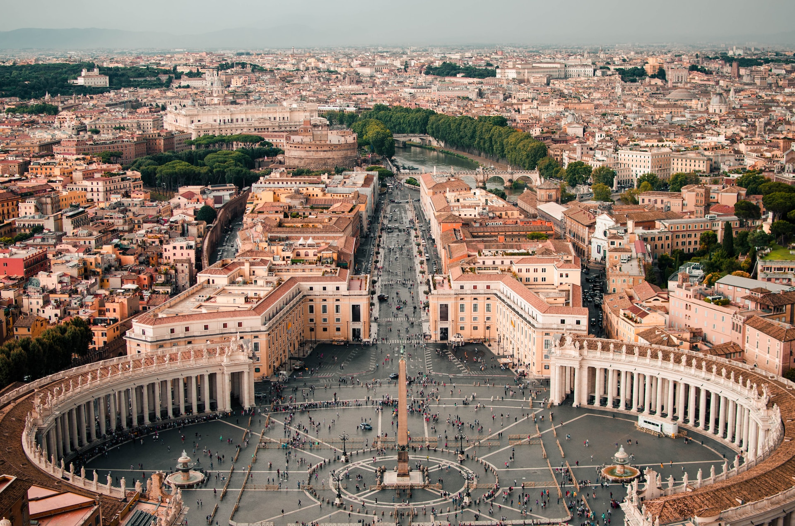

-

Castelo de Osaka
Ásia -

Arco do Cabo San Lucas
América -

Pão de Açucar
América -

Vaticano
Europa -

Tokyoskytree
Ásia -

Museu do Louvre
Europa
Ei, está pensando em fazer uma viagem e não sabe para onde ir ou por onde começar?
O Programando Viagens é perfeito para você! Este site te dará sugestões de países incríveis para conhecer. Colocamos aqui um compilado de pontos turísticos espalhados por todos os continentes com curiosidades históricas e culturais de cada um.
Então aproveite aí nossas dicas de viagens, conheça uma breve parte de todos estes pontos que você terá à sua disposição e escolha aquele mais tem a sua cara. Esperamos que você goste de todo o conteúdo que preparamos, sendo de grande utilidade para lhe ajudar em seu destino!
Programando viagens:
Essencial para quem deseja tornar suas viagens memoráveis!